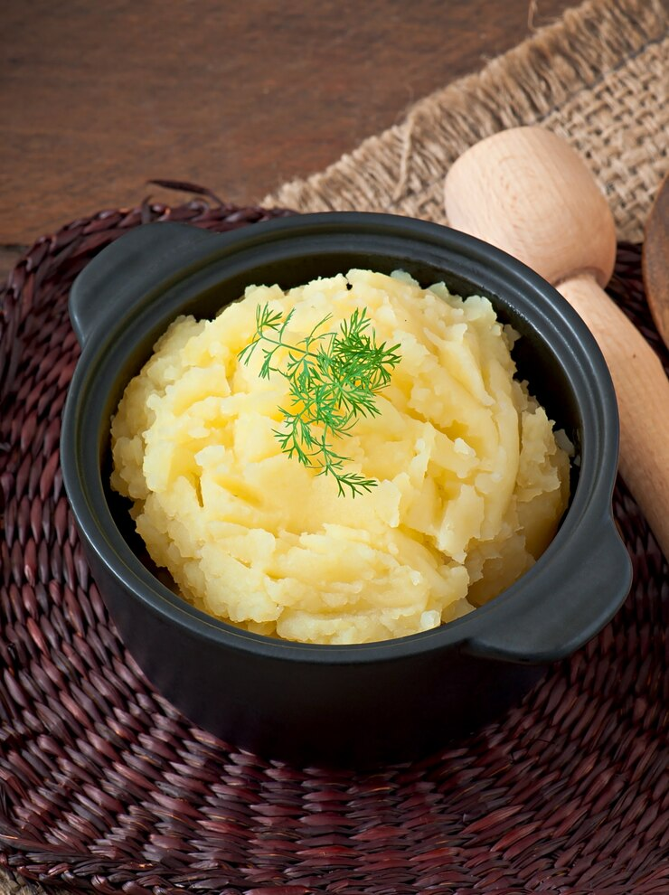

Mashed Potatoes
Recipe credit: John Mitzewich
Image credit: timolina

Description
This recipe will give you 4 servings of buttery, fluffy, and lump-free mashed potatoes every time!
Ingredients
- 3 large russet potatoes, peeled and cut in half lengthwise
- 1/2 cup whole milk
- 1/4 cup butter
- salt and ground black pepper to taste
Steps
- Place potatoes in a large pot and cover with salted water. Bring to a boil.
Reduce heat to medium-low, cover, and simmer until tender, 20 to 25 minutes.
- Drain potatoes, then return to the pot. Turn heat to high and allow potatoes
to dry for about 30 seconds. Turn off heat.
- Mash potatoes with a potato masher twice around the pot, then add milk and butter.
Continue to mash until smooth and fluffy. Whisk in salt and black pepper until evenly
distributed, about 15 seconds.
Back to homepage